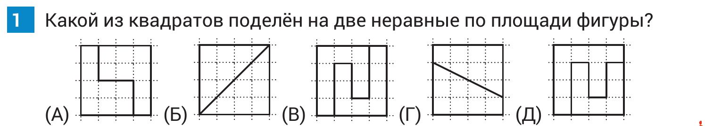

2024 · 3–4 классы · 24 задачи
Профили · без профиля
Профили сохраняют ответы и шаги в этом браузере. На общем компьютере каждый выбирает своё имя или псевдоним.
Условие задачи
Черновик
← → шаги · пробел — показ / пауза
Оригинал текущей задачи и источники

Условия и ответы сверены с официальными материалами.
Полный официальный вариант (PDF) · Официальные ответы (PDF) · Официальные решения (PDF)